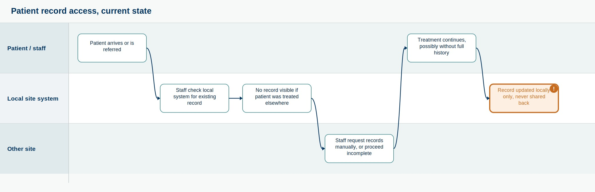
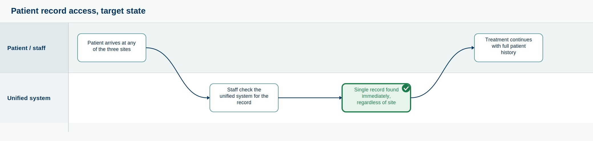
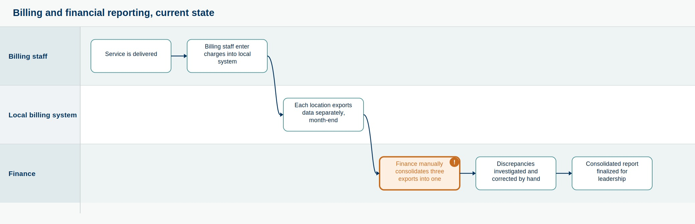
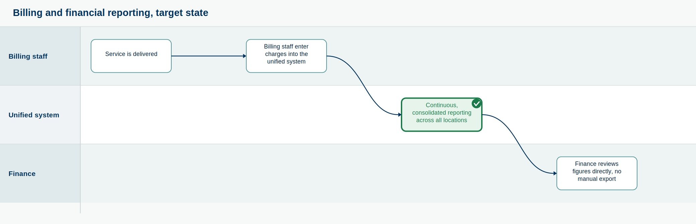
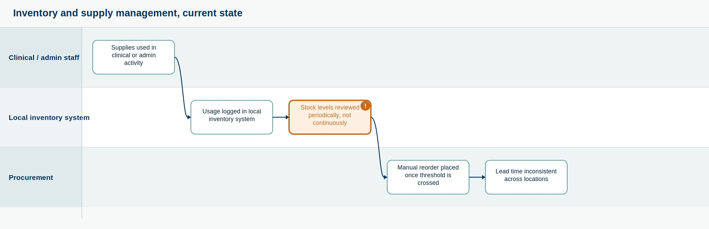
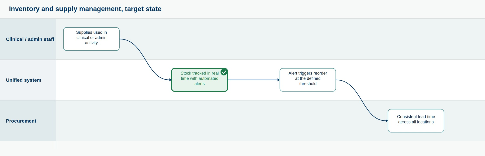
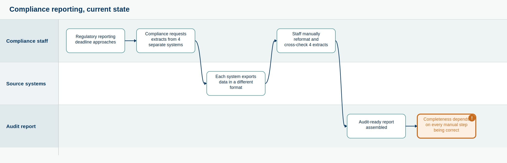
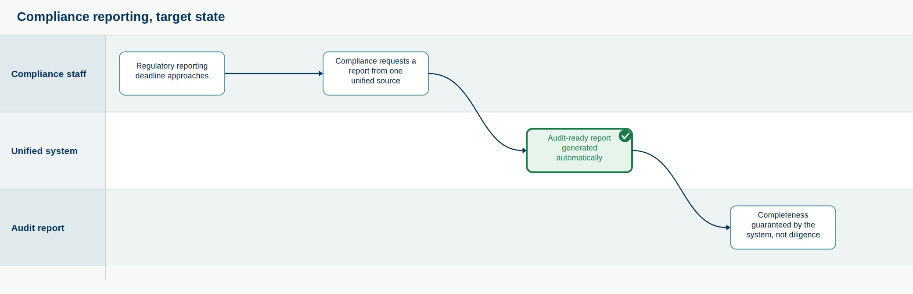

How does work actually move through IntelliMed today, and where does it break down?
Section 03 established what the business needs. Before those requirements can be assessed against any ERP platform, the current-state workflow they are meant to replace has to be mapped, not assumed. A requirement written without reference to the actual process it changes risks solving a problem that does not exist, or missing the one that does.
I built this workflow mapping from the departmental pain points established in Section 02 and the functional requirements established in Section 03, structured into the sequence each process actually follows today.
Where does each process start, where does it stall, and where does it end.
A note on scope: alongside each current-state diagram below, I have added a target-state view, showing the workflow once the requirement already established in Section 03 is met. These are conceptual, not vendor-specific, they show what the process looks like once the bottleneck is resolved, not how any particular platform's screens or integration layer would deliver it. That second, more technical diagram genuinely does require a selected vendor, Section 08 shortlisted two and declined to force a single choice without a real budget and timeline, so it is not drawn here. The conceptual target state is honest to build now because it restates a requirement already locked and traced. The vendor-specific implementation view becomes buildable once vendor selection is complete.
Patient arrives or is referred → staff check the local system for an existing record → if the patient was previously treated at a different IntelliMed location, no record is visible → staff either request records manually from the other site or proceed with incomplete information → treatment continues, potentially without full history → record is updated only in the local system, not shared back across locations.
Bottleneck: the workflow has no reconciliation step. A record created at one site never automatically reaches another, so the gap identified in Section 02 recurs every time a patient is treated at more than one location.
Business Impact: - Delayed treatment decisions - Fragmented patient history across sites - Increased clinical risk from incomplete information - Duplicate administrative effort re-collecting known information

Target state

Service is delivered → billing staff enter charges into the local billing system → at month-end, each of the three locations exports its billing data separately → finance staff manually consolidate three exports into one report → discrepancies between exports are investigated and corrected by hand → consolidated report is finalized for leadership.
Bottleneck: consolidation is a manual, end-of-cycle event rather than a continuous process. Errors are caught only after they have already delayed the reporting cycle, not before.
Business Impact: - Delayed month-end reporting - Reduced financial visibility for leadership - Increased reconciliation effort - Higher risk of uncorrected reporting errors

Target state

Supplies are used in clinical or administrative activity → usage is logged in the local inventory system → stock levels are reviewed periodically, not continuously → when stock falls below a workable threshold, staff place a manual reorder → lead time between the threshold being crossed and the reorder being placed is inconsistent across locations.
Bottleneck: the review step is periodic rather than real-time, which is the direct mechanical cause of the stockouts identified in Section 02.
Business Impact: - Stockouts of critical supplies - Emergency procurement at higher cost - Risk of service interruption - Inconsistent supply availability across locations

Target state

A regulatory reporting deadline approaches → compliance staff request data extracts from patient records, billing, HR, and inventory separately → each system exports data in a different format → staff manually reformat and cross-check the four extracts against each other → a single audit-ready report is assembled → completeness of the report depends on whether every manual step was executed correctly.
Bottleneck: the workflow has four separate points of manual handoff, and the audit trail can only demonstrate what was assembled, not confirm that nothing was missed.
Business Impact: - Slower audit response times - Higher compliance staff effort per reporting cycle - Reduced confidence in report completeness - Increased regulatory exposure if a gap goes undetected

Target state

Confirming that Section 03's requirements actually target the bottlenecks found here.
| Workflow | Bottleneck | Addressed By | Priority (Section 03) |
|---|---|---|---|
| Patient Record Access | No cross-location reconciliation | FR-01: Unified patient records | Must Have |
| Billing and Financial Reporting | Manual, end-of-cycle consolidation | FR-02: Real-time financial reporting | Must Have |
| Inventory and Supply Management | Periodic, not real-time, stock review | FR-03: Real-time inventory tracking | Should Have |
| Compliance Reporting | Four-way manual assembly, unverifiable completeness | FR-04: Automated compliance reporting | Must Have |
Each bottleneck identified through workflow mapping maps to a requirement already captured in Section 03. No new requirement emerged from this exercise that was not already anticipated, which is itself a finding: the stakeholder personas in Section 03 correctly diagnosed their own workflow problems without needing the process to be walked step by step first.
| Process | Major Risk | Priority |
|---|---|---|
| Patient Records | Clinical Safety | Must Have |
| Billing and Finance | Reporting Delay | Must Have |
| Inventory | Stockout | Should Have |
| Compliance | Regulatory Exposure | Must Have |
Every current-state workflow at IntelliMed works correctly under one condition: nothing goes wrong.
An ERP system's real value is not speed. It is removing the dependency on flawless manual execution in the first place.
What should leadership remember before moving on?
I mapped four workflows and identified four bottlenecks, and all four trace to requirements already established in Section 03, not new ones. That alignment is worth carrying forward deliberately: it means the next section's Gap Analysis is comparing IntelliMed's actual operational reality against ERP capability, not against an assumption of what that reality might be.
IntelliMed Health: ERP Implementation in the Health Sector Section 04: Workflow Mapping